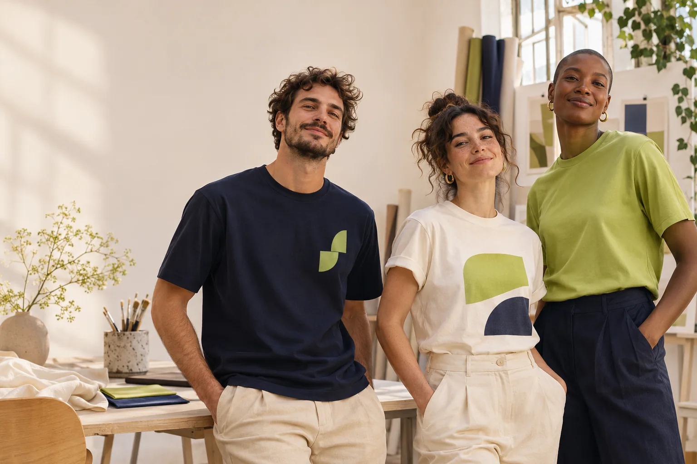

01
Le classique essentiel
Tee-shirts personnalisés
Pour vos équipes, vos événements, votre commerce ou une collection à votre image.
Imaginer mes tee-shirts ↗Atelier de personnalisation textile · Carcassonne
La personnalisation de tee-shirt qui fait vivre votre identité, du premier croquis au textile imprimé. Pour vos équipes, votre établissement ou votre prochain événement. Un t-shirt personnalisé avec logo ou des sweats pour votre équipe : nous étudions votre demande à partir de 5 pièces.

01 / Les supports
Tee-shirts, sweats ou polos : choisissez une pièce adaptée à votre activité, puis ajoutez votre logo ou votre visuel.
Le classique essentiel
Pour vos équipes, vos événements, votre commerce ou une collection à votre image.
Imaginer mes tee-shirts ↗Le confort en équipe
Une couche supplémentaire pour vos collaborateurs, membres et bénévoles.
Imaginer mes sweats ↗L’allure professionnelle
Une tenue soignée aux couleurs de votre entreprise, café ou restaurant.
Imaginer mes polos ↗02 / Le savoir-faire
Pour votre impression sur tee-shirt, la bonne technique dépend de votre visuel, du textile et de la quantité. Nous vous orientons vers la solution adaptée à votre projet.
Me faire conseiller ↗Une technique adaptée aux séries et aux visuels aux couleurs bien définies. Le nombre de couleurs, le textile et la quantité entrent dans le choix final.
Pour reproduire des visuels détaillés, des dégradés et des logos multicolores, y compris sur de petites séries.
Commandes étudiées à partir de 5 pièces.
03 / Vos univers
Un tee-shirt personnalisé avec logo peut réunir une équipe, donner le ton à un lieu ou rendre un événement reconnaissable.
Des textiles qui prolongent votre identité au quotidien.
Une tenue cohérente pour accueillir et servir.
Un textile commun pour vos membres et vos temps forts.
04 / Simple comme bonjour
Le textile, la quantité, votre idée : donnez-nous les grandes lignes.
Ajoutez votre logo ou votre fichier au formulaire de demande.
Nous examinons votre demande et revenons avec une proposition adaptée.
05 / À vous de jouer
Décrivez votre besoin à partir de 5 pièces. Vous pouvez joindre votre logo ou votre visuel pour nous aider à mieux comprendre votre idée.
06 / Proche de vous
Depuis Carcassonne, nous accompagnons les projets de personnalisation textile dans l’Aude et en Occitanie. Indiquez votre ville dans le formulaire afin que nous puissions confirmer les modalités de service pour votre projet.
Carcassonne · Narbonne · Toulouse · Montpellier · Béziers · Occitanie
Questions fréquentes
Nous étudions les demandes à partir de 5 pièces.
Vous pouvez joindre un fichier PDF, JPG ou PNG de 5 Mo maximum au formulaire de devis.
Le prix dépend du textile, de la quantité, du visuel et de la technique choisie. Demandez un devis adapté à votre projet.
La sérigraphie convient notamment aux séries et aux visuels aux couleurs définies. Le DTF permet de reproduire des motifs détaillés et multicolores. Nous vous conseillons selon votre projet.